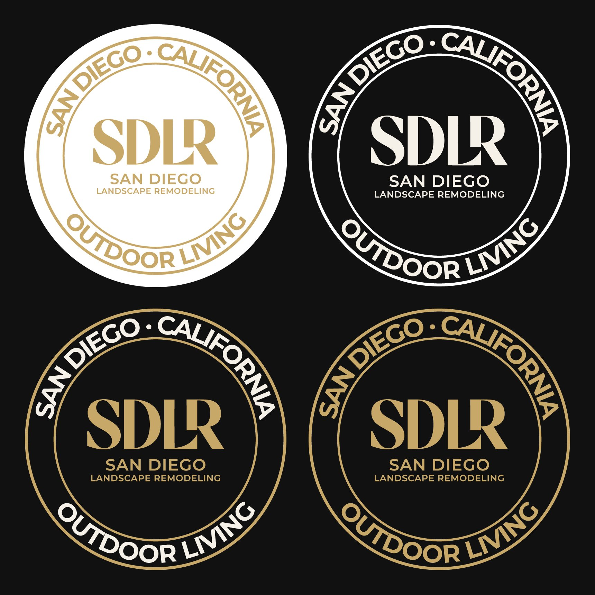
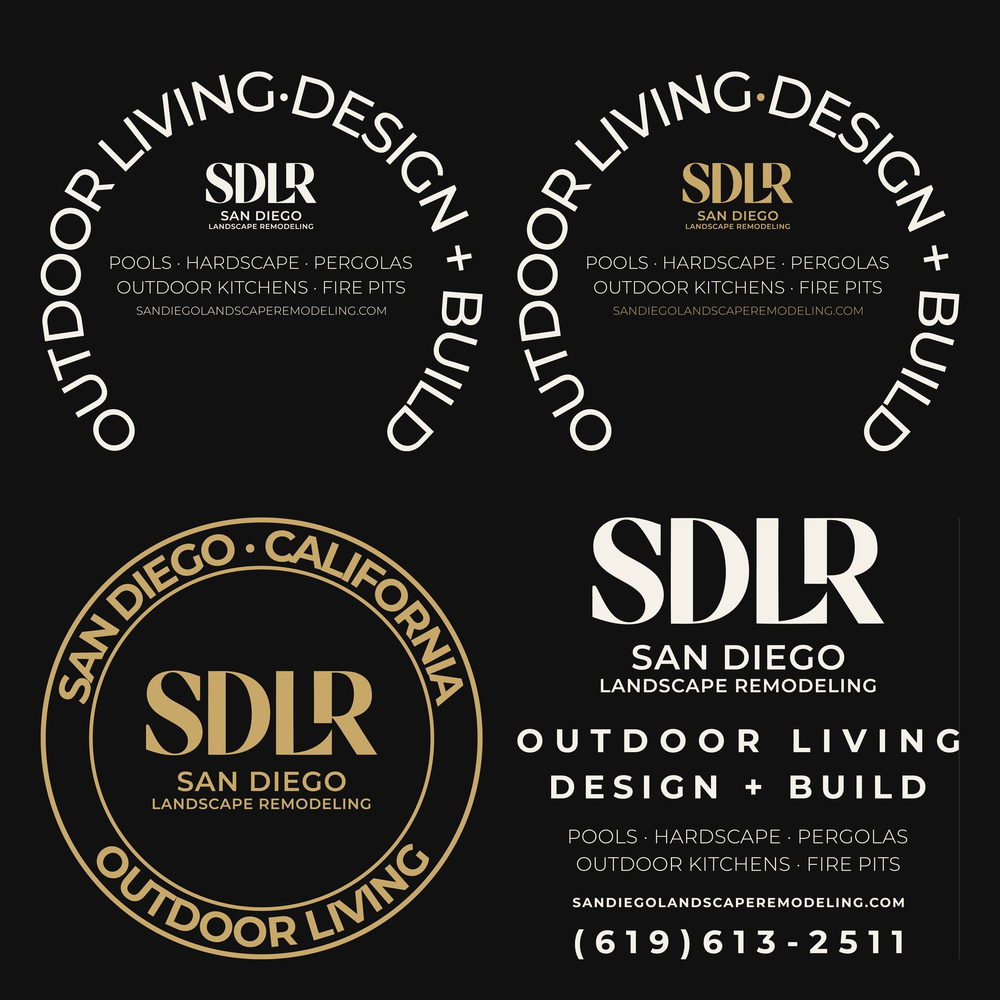
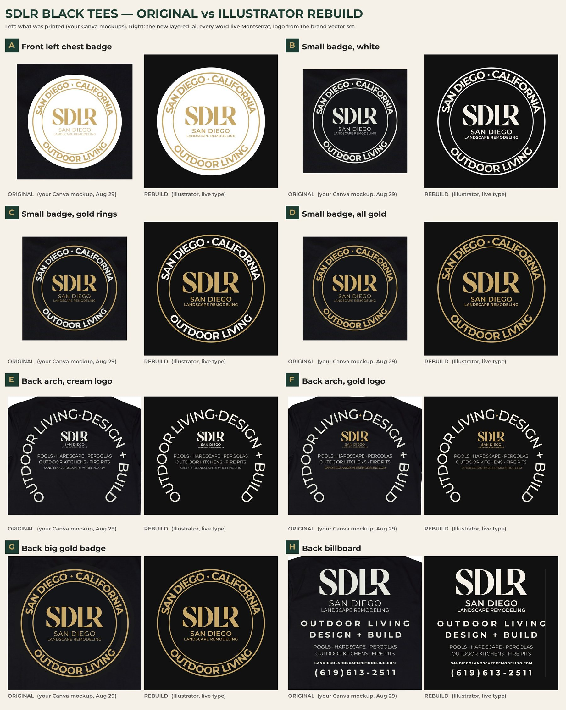
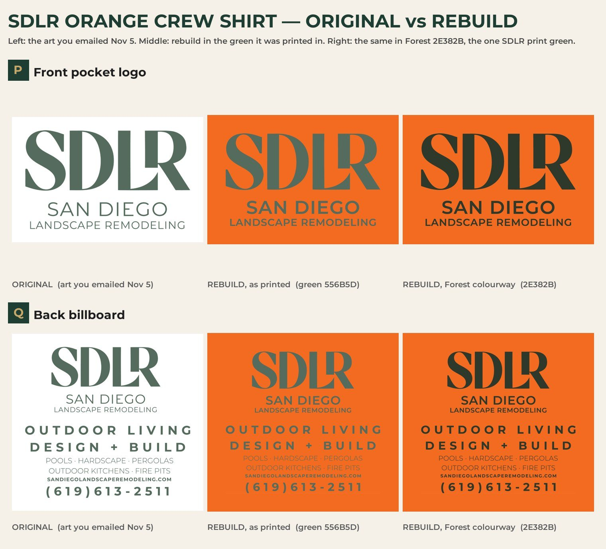

Every SDLR shirt that was actually printed, rebuilt in Illustrator so any word, colour or size can be changed by hand. The black tee set came from the August Canva file. The orange safety crew shirt came from the art sent on November 5.
FinalApproved by Gio on November 22, 2026. Version 2 adds Forest #2E382B, the one SDLR print green, and an orange shirt in Forest to compare.


Left: as printed, in the older green #556B5D. Right: the same in Forest #2E382B, the one SDLR print green, which reads stronger on safety orange. Both are artboards in the same file.


| Files | One layered Illustrator file per shirt with live Montserrat type, and an outlined PDF/X-4 for the printer (one page per print location). |
| Sizes | Left chest 4 in, centre chest 3.5 in, backs 10 to 12 in wide, pocket 3.5 in. These are standard sizes because the Canva mockups weren't to scale, so measure a printed shirt before reordering. |
| Inks | Black tee: gold #C8A869 (the gold it was printed in), cream #F5F1E8, white. Orange shirt: green #556B5D as printed, or Forest #2E382B. Each ink is one spot swatch, which is one screen for a screen printer. |
| Type | Montserrat Bold, Medium and Light. The logo comes from the brand vector set, so its wordmark is the current SemiBold (the printed shirts have the older, lighter one). |
The layered Illustrator files (live type, named layers, ink swatches, a hidden shirt-colour preview layer) and the README are in Drive under 02 Clients/san-diego-landscape-remodeling/assets/print-ready/apparel/2026-11-22-illustrator-rebuild/.